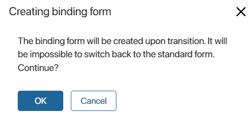
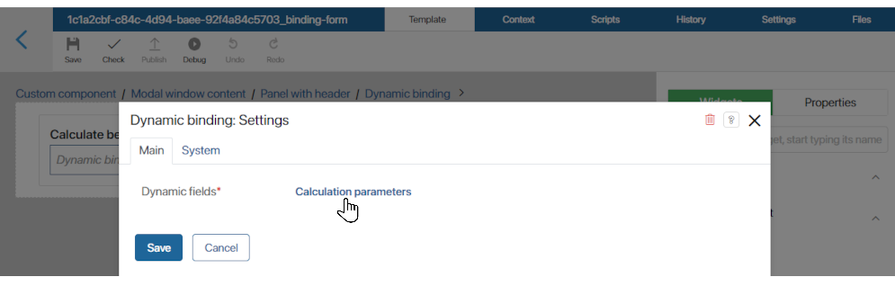
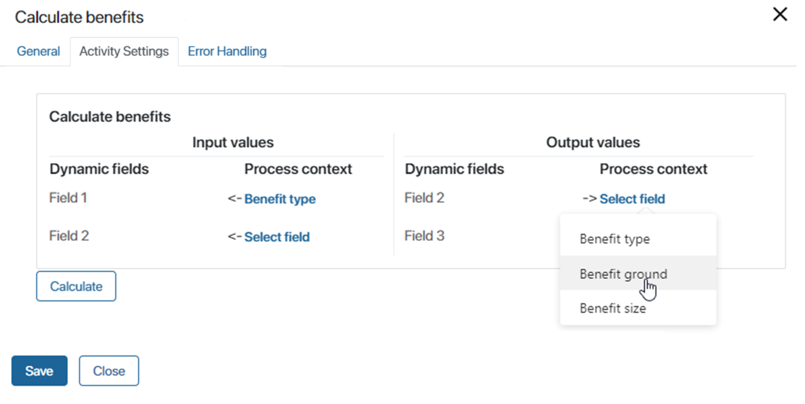

In a custom module, you can create a business process activity. If you place it on the process flow chart, it will perform a certain operation: a customized script, a process call, or a delegated activity. When the module is enabled, the graphical element appears in the business process designer on the Integrations tab and can be used in any custom process. The activity configured in the graphical element works only with the module enabled. If you run a process instance with the module disabled, the user will receive an error notification at the activity execution stage.
Keep in mind that:
- The attributes of the graphical element in which the activity is configured are mapped with the context variables of the process
- A graphical element of the Call Process type is different from a graphical element of the Start Process type
- Activities created in the module can be updated. At the same time, outdated graphical elements will remain working in already created processes
Map the activity and process contexts (bindings)
To perform a custom activity, bind its context with the context of the process in which it is applied. When the activity is configured in the module, on the Context tab, create input and output attributes. Then, bind these attributes with the variables of the process where you want to add the graphical element with the configured activity.
First, create attributes in the context of the activity created in the module:
- Go to the module settings on the Business Process Activities tab and add a new activity or open the one created earlier by clicking its name
- In the activity settings on the Context tab, set input and output parameters:
- Input parameters are the parameters that are filled in before the activity is executed. You can use them to pass the values of context variables of the process that contains the business process activity.
- Output parameters are the parameters that are filled after the business process activity is completed. They are passed to the context of the process that contains the activity or directly to the fields of the app associated with this process.
- Mark variables as input or output by checking the corresponding boxes.
- Save the context and publish the activity.
After adding the activity to the business process diagram, you can map these variables to the process context. To do that:
- Double-click on the custom action or add a new one from the right panel.
- On the General tab, in the Bind output attributes to field, specify where to record the results of the module activity:
- Context variables of the business process
- Fields of the app added to the business process context
Learn more about how to configure the graphical element in the business process designer in the Business Process Activity article.
- Click the Inputs and Outputs tab.
- A window with a mapping form will open. Select a process variable for each input and output attribute of the graphical element. Then the values from the activity created in the module will be passed to these variables. The input variables will include the data for executing the action configured in the graphical element, and the output variables will contain the result of this action. For mapping, variables should be of the same type.
- Click Save to finish binding.
Change the binding form
You can create your own binding form. To do this, click the Create form button on the Context tab of the script, call process, or delegated activity. Important: Once the customized binding form is created, you cannot go back to the standard form. You will see a warning and you can either continue or cancel the change of the standard form.

Click OK to go to the interface designer to create the form.
When the form is created, the Activity Settings tab will appear in the business process designer instead of the Inputs and Outputs tab. This will display the form you have configured.
Creating input and output variables using a script
Input and output variables of a custom activity can be created on the mapping form using a script.
начало внимание
Creating variables using a script is only possible for custom activities of the Script type .
конец внимание
To create variables using a script:
- On the Business process activities tab of the custom module, create a Script type activity or select an activity you added earlier.
- Create a custom binding form for the activity as described above and open it.
- On the Template tab, drag the Dynamic binding widget from the right-side panel to the canvas.
- On the Context tab of the form, create a variable selecting Arbitrary type as the type. It will store input and output variables.
- Save and publish the form.
- To make a context variable available in a script, close the form and open it again by clicking Edit form on the Context tab of the activity's settings.
- Open the Dynamic binding widget’s settings. On the Main tab, in the Dynamic fields setting, select the variable created in step 4. Save the widget settings.

- On the Scripts tab of the form, write a script that will create input and output variables and save them in the previously created Arbitrary type variable:
async function FillOut(): Promise<void> {
ViewContext.data.bindings =
{
'field1': {name: 'Field 1', type: DynamicFieldType.String, input: true,},
'field2': {name: 'Field 2', type: DynamicFieldType.String, output: true,},
'field3': {name: 'Field 3', type: DynamicFieldType.File, input: true, output: true,},
}
}
- Set up the script start parameters. A script can be started using a control on a form, for example, a button, or upon a specific event.
- Save and publish the binding form.
- As soon as you define a variable for dynamic binding, you can access it on the Scripts tab in the business process activity. For example, you can assign a value to it:
async function action(): Promise {
Context.data['bindings.field2'] = `Variable value`;
}
When you open the activity settings in the business process designer and go to the Activity Settings tab, dynamic fields with input and output parameters will be created automatically. Alternatively, you can run a script to generate them. Read more about it in BRIX TS SDK.

Call process vs Start process
The Call process activity type and the standard Start Process activity are similar, but there is a number of differences between them. They are shown in the table below.
|
Call process custom activity |
Start Process system activity |
Tracked in the Process Monitor |
No |
Yes |
The history of each step is available to users |
No |
Yes |
Asynchronous start |
No The transition to the next step of the business process is possible only after the business process activity of the Call process type is completed. |
Yes You can continue running the main process without waiting for the subprocess to finish. |
Display |
Activity does not appear in the list of processes in the Administration workspace. You cannot start it directly in the BRIX interface by clicking the Start Process button. It can be executed only by an activity of the Call process type |
Independent business process. Displayed in Administration > Business Processes. |
Update a business process activity
When a module is updated, business process activities may also be updated. Outdated activities cannot be used on new process diagrams. They will no longer be available on the right-side panel of the business process designer. However, outdated activities will continue to work as usual in previously created processes. When you modify the logic of a process with an outdated activity, for instance, change its participants, you will see a warning that the process contains outdated activities when you publish the process.
Found a typo? Select it and press Ctrl+Enter to send us feedback